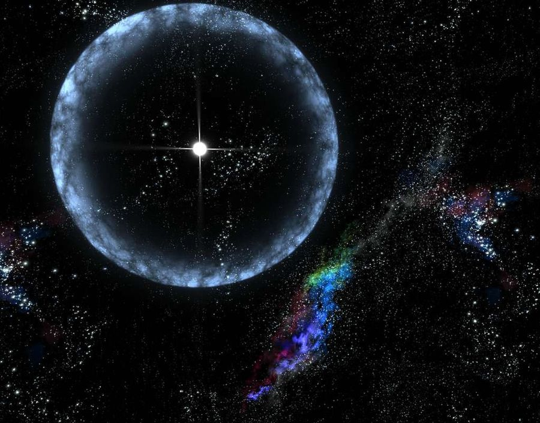

レギュラーシーズン最後の饗宴、異例の重みを持つライバル対決もA final regular-season feast with some uncharacteristically weighty rivalries注目される20試合の中で、伝統的なライバル対決の中には序列を下げたものもある。
レギュラーシーズン最後の饗宴、異例の重みを持つライバル対決もA final regular-season feast with some uncharacteristically weighty rivalries注目される20試合の中で、伝統的なライバル対決の中には序列を下げたものもある。 ボイジー州立大とPac-12にCFP進出の最良のチャンスを与えるには？How to give Boise State and the Pac-12 the best shot at the CFP?Pac-12が初めてのフレックスウィークのフットボール日程をどのようにまとめたかを見る。
ボイジー州立大とPac-12にCFP進出の最良のチャンスを与えるには？How to give Boise State and the Pac-12 the best shot at the CFP?Pac-12が初めてのフレックスウィークのフットボール日程をどのようにまとめたかを見る。 大逆転、サヨナラ勝ち、大量得点――信じられないほど素晴らしいサンクスギビングのNFLフットボールMassive comebacks, walk-off wins and plenty of points: An incredible Thanksgiving of NFL football最終1分間に3度の勝ち越しスコア？2桁のビハインドからの逆転が2度？そして3試合合計174点？そう、木曜日は最高だった。
大逆転、サヨナラ勝ち、大量得点――信じられないほど素晴らしいサンクスギビングのNFLフットボールMassive comebacks, walk-off wins and plenty of points: An incredible Thanksgiving of NFL football最終1分間に3度の勝ち越しスコア？2桁のビハインドからの逆転が2度？そして3試合合計174点？そう、木曜日は最高だった。 女子フィーストウィーク・ガイド：USCの勝利の分析、金曜日のさらなる試合Women's Feast Week guide: Analysis from USC's win, more Friday gamesUSCとワシントンが勝利し、金曜日のフィーストウィークの幕を開けた。
女子フィーストウィーク・ガイド：USCの勝利の分析、金曜日のさらなる試合Women's Feast Week guide: Analysis from USC's win, more Friday gamesUSCとワシントンが勝利し、金曜日のフィーストウィークの幕を開けた。 アボット氏退任で、テキサス州のデータセンターの将来はどうなるのか？With Abbott out, what does the future look like for data centers in Texas?テキサス州はデータセンターを最も歓迎してきた州の一つだが、新知事の就任でそれが変わる可能性がある。
アボット氏退任で、テキサス州のデータセンターの将来はどうなるのか？With Abbott out, what does the future look like for data centers in Texas?テキサス州はデータセンターを最も歓迎してきた州の一つだが、新知事の就任でそれが変わる可能性がある。 ベンガルズのWRヒギンズ、ハムストリングを「痛めて」いる、とテイラー監督Bengals WR Higgins dealing with 'sore' hamstring, says Taylorベンガルズのレシーバー、ティー・ヒギンズはハムストリングを「痛めて」おり、ザック・テイラー監督によると、日曜日のセインツ戦では出場が疑問視されている。
ベンガルズのWRヒギンズ、ハムストリングを「痛めて」いる、とテイラー監督Bengals WR Higgins dealing with 'sore' hamstring, says Taylorベンガルズのレシーバー、ティー・ヒギンズはハムストリングを「痛めて」おり、ザック・テイラー監督によると、日曜日のセインツ戦では出場が疑問視されている。 フォファナ、チェルシーファンからブーイングを受け、警告を受け、インタビューへの怒りの中で交代させられるFofana booed by Chelsea fans, then booked, subbed off amid ire over interviewチェルシーのファンは、物議を醸した無許可のインタビューの後、ノッティンガム・フォレストへの遠征の序盤にウェズレイ・フォファナにブーイングを浴びせた。
フォファナ、チェルシーファンからブーイングを受け、警告を受け、インタビューへの怒りの中で交代させられるFofana booed by Chelsea fans, then booked, subbed off amid ire over interviewチェルシーのファンは、物議を醸した無許可のインタビューの後、ノッティンガム・フォレストへの遠征の序盤にウェズレイ・フォファナにブーイングを浴びせた。 レイブンズのDBハンフリーが先発復帰へ、ただし役割は不透明Ravens DB Humphrey to return to lineup, but role uncertainレイブンズのコーナーバック、マーロン・ハンフリーは、ボルチモア市について中傷的な発言をしたことでベンチに下げられてから1週間後、日曜日のテキサンズ戦に出場する。
レイブンズのDBハンフリーが先発復帰へ、ただし役割は不透明Ravens DB Humphrey to return to lineup, but role uncertainレイブンズのコーナーバック、マーロン・ハンフリーは、ボルチモア市について中傷的な発言をしたことでベンチに下げられてから1週間後、日曜日のテキサンズ戦に出場する。 残りのNFL第12週の試合ガイド：対戦プレビュー、予想、ピック、豆知識Our guide to remaining NFL Week 12 games: Matchup previews, predictions, picks and nuggetsシーホークス対49ers？カーク・カズンズ対アトランタ？第12週にはあと12試合あり、そのすべてについてピックや予想などを紹介する。
残りのNFL第12週の試合ガイド：対戦プレビュー、予想、ピック、豆知識Our guide to remaining NFL Week 12 games: Matchup previews, predictions, picks and nuggetsシーホークス対49ers？カーク・カズンズ対アトランタ？第12週にはあと12試合あり、そのすべてについてピックや予想などを紹介する。 49ersは期待を上回っている――しかし、NFC西地区を早々に確定できるか？The 49ers have exceeded expectations -- but can they lock up the NFC West soon?49ersは9勝1敗で、今後3試合のうち2試合はホームでシーホークス（6勝4敗）とラムズ（7勝4敗）と対戦する。
49ersは期待を上回っている――しかし、NFC西地区を早々に確定できるか？The 49ers have exceeded expectations -- but can they lock up the NFC West soon?49ersは9勝1敗で、今後3試合のうち2試合はホームでシーホークス（6勝4敗）とラムズ（7勝4敗）と対戦する。 パワーランキング：各チームが最も感謝すべき選手、コーチ、幹部1人Power Rankings: One player, coach or exec for whom each team is most thankful今週の30チームすべての順位は以下の通り――そして、各フランチャイズが最も感謝すべき人物1人。
パワーランキング：各チームが最も感謝すべき選手、コーチ、幹部1人Power Rankings: One player, coach or exec for whom each team is most thankful今週の30チームすべての順位は以下の通り――そして、各フランチャイズが最も感謝すべき人物1人。 通説に反し、モールの来客数と支出は増加しているContrary to popular belief, foot traffic and spending at malls is upこれはアメリカのモールにとって最大の買い物週末であり、広く信じられているのとは反対に、モールは衰退していない。その理由の一つは？ティーンエイジャーやプレティーンが
通説に反し、モールの来客数と支出は増加しているContrary to popular belief, foot traffic and spending at malls is upこれはアメリカのモールにとって最大の買い物週末であり、広く信じられているのとは反対に、モールは衰退していない。その理由の一つは？ティーンエイジャーやプレティーンが
Dバックス、日本人右腕タカハシを1年契約で獲得（情報筋）D-backs nab Japanese righty Takahashi on 1-year deal (source) キャサリン妃のがんドキュメンタリー『Heal』：3つのポイントPrincess Kate’s Cancer Documentary ‘Heal’: 3 Takeaways今週公開された30分の公認ドキュメンタリー『Heal』は、2024年のがんの診断と治療以来のキャサリン妃の回復の一端を紹介している。
キャサリン妃のがんドキュメンタリー『Heal』：3つのポイントPrincess Kate’s Cancer Documentary ‘Heal’: 3 Takeaways今週公開された30分の公認ドキュメンタリー『Heal』は、2024年のがんの診断と治療以来のキャサリン妃の回復の一端を紹介している。 AI広告の事後検証Postmortem of AI adsAI企業がこのサイクルで蓄積してきたデータは、今後、極めて限定的に絞り込まれたオーディエンスへの広告配信に役立つだろう。
AI広告の事後検証Postmortem of AI adsAI企業がこのサイクルで蓄積してきたデータは、今後、極めて限定的に絞り込まれたオーディエンスへの広告配信に役立つだろう。 作家エリザベス・アレクサンダー、恐怖とどう向き合うかWriter Elizabeth Alexander on how she copes with fear「ワイルド・カード」では、有名なゲストたちが普段はあまり話さない質問に答える。作家エリザベス・アレクサンダーが、恐怖とどう向き合うかについて語る。
作家エリザベス・アレクサンダー、恐怖とどう向き合うかWriter Elizabeth Alexander on how she copes with fear「ワイルド・カード」では、有名なゲストたちが普段はあまり話さない質問に答える。作家エリザベス・アレクサンダーが、恐怖とどう向き合うかについて語る。 ホットストーブの噂：パドレス、カブス、今永、ビーバー、カージナルスHot Stove Rumors: Padres, Cubs, Imanaga, Bieber, Cardinals
ホットストーブの噂：パドレス、カブス、今永、ビーバー、カージナルスHot Stove Rumors: Padres, Cubs, Imanaga, Bieber, Cardinals ジャズ、ブルージェイズ加入の契約に近づく（関係筋）Jazz near deal to join Blue Jays (source)
ジャズ、ブルージェイズ加入の契約に近づく（関係筋）Jazz near deal to join Blue Jays (source) 今すぐ配信で観られるアクション映画5選Five Action Movies to Stream Now今月のセレクションには、周到に計画された強盗、10億ドルの融資回収ミッション、傭兵と戦う家族が含まれている。
今すぐ配信で観られるアクション映画5選Five Action Movies to Stream Now今月のセレクションには、周到に計画された強盗、10億ドルの融資回収ミッション、傭兵と戦う家族が含まれている。 ヨハネスブルクの議員ら、市長選でヘレン・ジレ氏を退けるJohannesburg Lawmakers Snub Helen Zille in Mayoral Election南アフリカで最も裕福な都市を率いる人物としてハーマン・マシャバ氏が選ばれたことは、選挙で最も多くの票を獲得した政党の候補者であるヘレン・ジレ氏にとって打撃となった。
ヨハネスブルクの議員ら、市長選でヘレン・ジレ氏を退けるJohannesburg Lawmakers Snub Helen Zille in Mayoral Election南アフリカで最も裕福な都市を率いる人物としてハーマン・マシャバ氏が選ばれたことは、選挙で最も多くの票を獲得した政党の候補者であるヘレン・ジレ氏にとって打撃となった。 佐藤は6年契約を結ぶ前からカブスとのつながりがあったSato already had some Cubs connections before signing 6-year contract
佐藤は6年契約を結ぶ前からカブスとのつながりがあったSato already had some Cubs connections before signing 6-year contract サンクスギビングの嵐で東海岸で40万人以上が停電Thanksgiving Storm Leaves More Than 400,000 Without Power on the East Coast嵐はバージニア州からニューヨークにかけて大雨と強風をもたらし、休暇シーズンの移動を混乱させた。状況は金曜日に徐々に改善しつつあった。
サンクスギビングの嵐で東海岸で40万人以上が停電Thanksgiving Storm Leaves More Than 400,000 Without Power on the East Coast嵐はバージニア州からニューヨークにかけて大雨と強風をもたらし、休暇シーズンの移動を混乱させた。状況は金曜日に徐々に改善しつつあった。 共和党が歓迎した最高裁判決が、結局は同党を傷つけたSupreme Court Rulings Cheered by Republicans Wound Up Hurting Them投票権、移民、汚職に関する判決は反発を生み、民主党による議会の圧勝につながった投票率の上昇を後押しした。
共和党が歓迎した最高裁判決が、結局は同党を傷つけたSupreme Court Rulings Cheered by Republicans Wound Up Hurting Them投票権、移民、汚職に関する判決は反発を生み、民主党による議会の圧勝につながった投票率の上昇を後押しした。 ロイヤルズ、FA内野手ボームと2年2000万ドルで合意Royals agree to 2-year, $20M deal with free-agent infielder Bohm
ロイヤルズ、FA内野手ボームと2年2000万ドルで合意Royals agree to 2-year, $20M deal with free-agent infielder Bohm ジョニー・デップの『エベニーザー』は金持ちのプロパガンダだJohnny Depp’s ‘Ebenezer’ Is Rich Guy Propaganda『エベニーザー』は、今日のシリコンバレーを中心とした、慈善に反対する特権意識や公正な賃金の支払いへの消極性を反映している。
ジョニー・デップの『エベニーザー』は金持ちのプロパガンダだJohnny Depp’s ‘Ebenezer’ Is Rich Guy Propaganda『エベニーザー』は、今日のシリコンバレーを中心とした、慈善に反対する特権意識や公正な賃金の支払いへの消極性を反映している。 C・デービス――2021年の全体1位指名選手――がアリゾナへ；バックスはユーティリティーのタワを獲得C Davis -- 2021 No. 1 pick -- headed to Arizona; Bucs get utility man Tawa
C・デービス――2021年の全体1位指名選手――がアリゾナへ；バックスはユーティリティーのタワを獲得C Davis -- 2021 No. 1 pick -- headed to Arizona; Bucs get utility man Tawa ニューヨーク州初の女性上院多数党院内総務、アンドレア・スチュワート＝カズンズ氏が死去Andrea Stewart-Cousins, New York’s First Female Senate Majority Leader, Diesスチュワート＝カズンズ氏は76歳で、州上院議員を20年間務めた。
ニューヨーク州初の女性上院多数党院内総務、アンドレア・スチュワート＝カズンズ氏が死去Andrea Stewart-Cousins, New York’s First Female Senate Majority Leader, Diesスチュワート＝カズンズ氏は76歳で、州上院議員を20年間務めた。 カナダ最高裁、ケベック州の世俗主義法に関する物議を醸す措置の使用を認めるCanada’s Top Court Lets Quebec Use Controversial Measure for Secularism Lawケベック州は、学校の教師や警察官など一部の公務員が勤務中に宗教的象徴を身に着けることを禁止する法律を成立させるためにその措置を用いていたが、
カナダ最高裁、ケベック州の世俗主義法に関する物議を醸す措置の使用を認めるCanada’s Top Court Lets Quebec Use Controversial Measure for Secularism Lawケベック州は、学校の教師や警察官など一部の公務員が勤務中に宗教的象徴を身に着けることを禁止する法律を成立させるためにその措置を用いていたが、 ショーン・パニッカー、メトの『イェヌーファ』での役を短期間で習得したことについて語るSean Panikkar on Quickly Learning His Role in the Met’s ‘Jenufa’メトロポリタン・オペラの新制作『イェヌーファ』で、ショーン・パニッカーは2週間足らずでラツァの役を習得した。彼はその経緯について語る。
ショーン・パニッカー、メトの『イェヌーファ』での役を短期間で習得したことについて語るSean Panikkar on Quickly Learning His Role in the Met’s ‘Jenufa’メトロポリタン・オペラの新制作『イェヌーファ』で、ショーン・パニッカーは2週間足らずでラツァの役を習得した。彼はその経緯について語る。 株式市場の激しい変動にもかかわらず、穏やかに暮らす方法How to Live Calmly, Despite Stock Market Whiplashエヌビディアは下落し、上昇し、再び下落し、市場もそれに追随してきた。しかし、長期で分散投資を行う投資家が方針を変える必要はないと、われわれのコラムニストは述べている。
株式市場の激しい変動にもかかわらず、穏やかに暮らす方法How to Live Calmly, Despite Stock Market Whiplashエヌビディアは下落し、上昇し、再び下落し、市場もそれに追随してきた。しかし、長期で分散投資を行う投資家が方針を変える必要はないと、われわれのコラムニストは述べている。 乱高下の一週間の締めくくりに株価が上昇Stocks Rally at End of a Week of Wild Swings休日により短縮された波乱の取引が続く中、ボラティリティが投資家を翻弄した。
乱高下の一週間の締めくくりに株価が上昇Stocks Rally at End of a Week of Wild Swings休日により短縮された波乱の取引が続く中、ボラティリティが投資家を翻弄した。 右投手ヒメネス、復活の物語は続く レンジャーズとマイナー契約に合意（関係者）RHP Jiménez continues comeback story, agrees to Minors deal with Rangers (source)
右投手ヒメネス、復活の物語は続く レンジャーズとマイナー契約に合意（関係者）RHP Jiménez continues comeback story, agrees to Minors deal with Rangers (source) 踊るロボットとともに、ロシアは戦争ではなくAIが形作る未来を提示With Dancing Robots, Russia Projects a Future Shaped by A.I., Not Warロシア当局は人工知能を、同国の差し迫った問題を解決する手段とみている。しかし、ロシアの技術開発は制約を受けてきた。
踊るロボットとともに、ロシアは戦争ではなくAIが形作る未来を提示With Dancing Robots, Russia Projects a Future Shaped by A.I., Not Warロシア当局は人工知能を、同国の差し迫った問題を解決する手段とみている。しかし、ロシアの技術開発は制約を受けてきた。 スペイン警察、裏庭の遊び場の下に広大なマリファナの地下施設を発見Spanish Police Find a Vast Marijuana Bunker Beneath a Backyard Playground人工芝の上のプレイハウスの下で大規模なマリファナ栽培地が見つかり、スペイン南部で5人が逮捕された。
スペイン警察、裏庭の遊び場の下に広大なマリファナの地下施設を発見Spanish Police Find a Vast Marijuana Bunker Beneath a Backyard Playground人工芝の上のプレイハウスの下で大規模なマリファナ栽培地が見つかり、スペイン南部で5人が逮捕された。 古いテレビ番組はブームの時代、新しいテレビはそうでもないIt’s Boom Times for Old TV Shows. New TV, Not So Much.オリジナルシリーズの減少、決断疲れ、安らぎへの欲求が、視聴者を過去へ逃避させている。
古いテレビ番組はブームの時代、新しいテレビはそうでもないIt’s Boom Times for Old TV Shows. New TV, Not So Much.オリジナルシリーズの減少、決断疲れ、安らぎへの欲求が、視聴者を過去へ逃避させている。 ロシアはなぜスターリンの犯罪を消し去っているのかWhy Russia Is Erasing Stalin’s Crimesロシア全土で、ヨシフ・スターリンの抑圧体制の犠牲者を追悼する記念碑が静かに撤去され、ウクライナ戦争への批判者がますます多く投獄されている。
ロシアはなぜスターリンの犯罪を消し去っているのかWhy Russia Is Erasing Stalin’s Crimesロシア全土で、ヨシフ・スターリンの抑圧体制の犠牲者を追悼する記念碑が静かに撤去され、ウクライナ戦争への批判者がますます多く投獄されている。 民主党対トランプの争いで、敗者となるのは連邦政府の請負業者かもしれないIn Democrats vs. Trump, the Loser May Be Federal Contractors新たに多数派を占める民主党は、計画している調査で企業やその他の外部関係者を標的にし始めたが、大統領は彼らを解雇すると脅した
民主党対トランプの争いで、敗者となるのは連邦政府の請負業者かもしれないIn Democrats vs. Trump, the Loser May Be Federal Contractors新たに多数派を占める民主党は、計画している調査で企業やその他の外部関係者を標的にし始めたが、大統領は彼らを解雇すると脅した ホリデーセールは魅力的。買った後の後悔を避ける方法Holiday Deals Are Tempting. Here’s How to Avoid Buyer’s Remorse.うますぎるセールもある。専門家は、計算すること、リストを作ること、そして「今買って、後で払う」プラットフォームを使って購入しないことを勧めている。
ホリデーセールは魅力的。買った後の後悔を避ける方法Holiday Deals Are Tempting. Here’s How to Avoid Buyer’s Remorse.うますぎるセールもある。専門家は、計算すること、リストを作ること、そして「今買って、後で払う」プラットフォームを使って購入しないことを勧めている。 ブラックフライデーのセールとホリデーセールはインフルエンサーにとって大きな収入源Black Friday Deals and Holiday Sales Are Big Money for Influencersブランドのブラックフライデーとサイバーマンデーのマーケティング戦略では、ソーシャルメディアのインフルエンサーに高額を支払って動画を投稿してもらうことが、ますます大きな割合を占めるようになっている。
ブラックフライデーのセールとホリデーセールはインフルエンサーにとって大きな収入源Black Friday Deals and Holiday Sales Are Big Money for Influencersブランドのブラックフライデーとサイバーマンデーのマーケティング戦略では、ソーシャルメディアのインフルエンサーに高額を支払って動画を投稿してもらうことが、ますます大きな割合を占めるようになっている。 文学の愛されるキュレーター、フランスの書店が深刻な危機に直面France’s Bookstores, Beloved Curators of Literature, Are in a Deep Crisisコスト上昇と価格規制に挟まれ、フランスの書店は記録的なペースで閉店し、新人作家から重要な棚のスペースを奪っている。
文学の愛されるキュレーター、フランスの書店が深刻な危機に直面France’s Bookstores, Beloved Curators of Literature, Are in a Deep Crisisコスト上昇と価格規制に挟まれ、フランスの書店は記録的なペースで閉店し、新人作家から重要な棚のスペースを奪っている。 気候交渉は崩壊したが、「電気の時代」は進み続けているとエネルギー機関トップが語るClimate Talks Imploded, but the ‘Age of Electricity’ Rolls On, Energy Chief Says国際エネルギー機関のファティ・ビロル事務局長は、市場の力、データセンター、エネルギー安全保障が、いずれにせよクリーンな移行を推進していると述べた。
気候交渉は崩壊したが、「電気の時代」は進み続けているとエネルギー機関トップが語るClimate Talks Imploded, but the ‘Age of Electricity’ Rolls On, Energy Chief Says国際エネルギー機関のファティ・ビロル事務局長は、市場の力、データセンター、エネルギー安全保障が、いずれにせよクリーンな移行を推進していると述べた。 メッツ、ユーイングとの8年9500万ドルの契約延長を正式決定Mets finalize Ewing's 8-year, $95 million extension
メッツ、ユーイングとの8年9500万ドルの契約延長を正式決定Mets finalize Ewing's 8-year, $95 million extension 成功のルート：ドジャースの有望株、一新した武器で躍進Root of success: Dodgers prospect thriving with revamped arsenal
成功のルート：ドジャースの有望株、一新した武器で躍進Root of success: Dodgers prospect thriving with revamped arsenal 健康を実感するフリーエージェントのウッドラフ、’27年の登板を見据えるFeeling healthy, free agent Woodruff sets sights on pitching in '27
健康を実感するフリーエージェントのウッドラフ、’27年の登板を見据えるFeeling healthy, free agent Woodruff sets sights on pitching in '27 スペインの極右時代は1975年に終わった。この男がそれを変えるのか？Spain’s Far-Right Era Ended in 1975. Will This Man Change That?世論調査が正しければ、サンティアゴ・アバスカル率いるVox党は、フランコ時代以来初めてスペイン政府に加わる極右団体となる可能性がある。
スペインの極右時代は1975年に終わった。この男がそれを変えるのか？Spain’s Far-Right Era Ended in 1975. Will This Man Change That?世論調査が正しければ、サンティアゴ・アバスカル率いるVox党は、フランコ時代以来初めてスペイン政府に加わる極右団体となる可能性がある。 ジェットセットを激怒させた社交欄記者The Society Page Reporter Who Outraged the Jet Setトム・ウルフが登場する前に、パーク・アベニューをニュースに変えたシャーロット・カーティスがいた。
ジェットセットを激怒させた社交欄記者The Society Page Reporter Who Outraged the Jet Setトム・ウルフが登場する前に、パーク・アベニューをニュースに変えたシャーロット・カーティスがいた。 2028年大統領選に向けた5つの大きな疑問Five Big Questions for the 2028 Presidential RaceJ・D・バンスとマルコ・ルビオは出馬するのか。カマラ・ハリスとアレクサンドリア・オカシオ＝コルテスはどうか。そしてもちろん、トランプ大統領はどのような役割を果たすのか。
2028年大統領選に向けた5つの大きな疑問Five Big Questions for the 2028 Presidential RaceJ・D・バンスとマルコ・ルビオは出馬するのか。カマラ・ハリスとアレクサンドリア・オカシオ＝コルテスはどうか。そしてもちろん、トランプ大統領はどのような役割を果たすのか。 中国批判のプーマ・シェン氏、次期台北市長になる可能性Puma Shen, Critic of China, Could be the Next Mayor of Taipei侵攻に備えて民間人を準備させる取り組みを理由に中国から制裁を受けているプーマ・シェン氏は、勝利すれば台湾の次の政治スターになる可能性がある。
中国批判のプーマ・シェン氏、次期台北市長になる可能性Puma Shen, Critic of China, Could be the Next Mayor of Taipei侵攻に備えて民間人を準備させる取り組みを理由に中国から制裁を受けているプーマ・シェン氏は、勝利すれば台湾の次の政治スターになる可能性がある。 新年までに観たい映画17本、オスカー候補狙いからブロックバスターまで17 films to see before New Year's, from Oscar-bait to blockbustersこの冬、ペドロ・パスカルがチェロ奏者を演じ、ジュリアン・ムーアがコミュニティ・シアターに取り組み、アンドリュー・ガーフィールドがOpenAIの首脳としてのサム・アルトマンの台頭を見せてくれる。
新年までに観たい映画17本、オスカー候補狙いからブロックバスターまで17 films to see before New Year's, from Oscar-bait to blockbustersこの冬、ペドロ・パスカルがチェロ奏者を演じ、ジュリアン・ムーアがコミュニティ・シアターに取り組み、アンドリュー・ガーフィールドがOpenAIの首脳としてのサム・アルトマンの台頭を見せてくれる。 感謝祭の嵐が東海岸を襲う。そしてブラックフライデーの売上高は過去最高水準に達する見通しThanksgiving storm batters East Coast. And, Black Friday sales to hit record levels強力な嵐により約100万世帯が停電し、通りが浸水した。そして専門家は、インフレが米国の消費支出を冷え込ませることはないと予測している。
感謝祭の嵐が東海岸を襲う。そしてブラックフライデーの売上高は過去最高水準に達する見通しThanksgiving storm batters East Coast. And, Black Friday sales to hit record levels強力な嵐により約100万世帯が停電し、通りが浸水した。そして専門家は、インフレが米国の消費支出を冷え込ませることはないと予測している。 フランス映画のスター、ジェラール・ドパルデューに強姦と性的暴行で裁判を受けるよう命令French cinema star Gérard Depardieu ordered to stand trial for rape and sexual assaultこの事件は、フランスが性暴力と向き合う中で最も注目される事件の一つとなった。同国では#MeToo運動が抵抗に直面してきた。
フランス映画のスター、ジェラール・ドパルデューに強姦と性的暴行で裁判を受けるよう命令French cinema star Gérard Depardieu ordered to stand trial for rape and sexual assaultこの事件は、フランスが性暴力と向き合う中で最も注目される事件の一つとなった。同国では#MeToo運動が抵抗に直面してきた。 AIはいかに数学を変えているかHow A.I. Is Transforming Mathematics“AIがもたらしたことの一つは、洞察もなく、理解もなく、私たちに答えを与えたことだ。”
AIはいかに数学を変えているかHow A.I. Is Transforming Mathematics“AIがもたらしたことの一つは、洞察もなく、理解もなく、私たちに答えを与えたことだ。” 私は政府の汚職を訴追してきた。私たちは窮地にあるI Prosecuted Government Corruption. We’re in Trouble.連邦検察官は今後何年も、腐敗した政府当局者を訴追するのに苦労することになるだろう。
私は政府の汚職を訴追してきた。私たちは窮地にあるI Prosecuted Government Corruption. We’re in Trouble.連邦検察官は今後何年も、腐敗した政府当局者を訴追するのに苦労することになるだろう。 感謝祭の停電からブラックフライデーまで、激しい天候と経済的苦境に見舞われた祝日From Thanksgiving blackouts to Black Friday, a holiday hit by wild weather and economic woes嵐が木曜日に国内の広範囲を襲い、数千世帯で停電が発生し、移動に混乱をもたらした。本日、ブラックフライデーのショッピングセールが始まり、
感謝祭の停電からブラックフライデーまで、激しい天候と経済的苦境に見舞われた祝日From Thanksgiving blackouts to Black Friday, a holiday hit by wild weather and economic woes嵐が木曜日に国内の広範囲を襲い、数千世帯で停電が発生し、移動に混乱をもたらした。本日、ブラックフライデーのショッピングセールが始まり、 今週、批評家たちが話題にしている新作映画7本7 New Movies Our Critics Are Talking About This Week気軽に映画を楽しむ人でも熱心な映画ファンでも、私たちの批評家はこれらの映画を知っておく価値があると考えています。
今週、批評家たちが話題にしている新作映画7本7 New Movies Our Critics Are Talking About This Week気軽に映画を楽しむ人でも熱心な映画ファンでも、私たちの批評家はこれらの映画を知っておく価値があると考えています。 物価上昇の中、アメリカ人は支出を減らすのではなくトレードオフを行っているAs Prices Rise, Americans Are Making Trade-Offs Rather Than Cutting Back堅調な個人消費の裏には、最も大切にしている食事や旅行、活動の費用を賄えるよう、限られた予算をやりくりする多くの家庭の決断がある。
物価上昇の中、アメリカ人は支出を減らすのではなくトレードオフを行っているAs Prices Rise, Americans Are Making Trade-Offs Rather Than Cutting Back堅調な個人消費の裏には、最も大切にしている食事や旅行、活動の費用を賄えるよう、限られた予算をやりくりする多くの家庭の決断がある。 エジプトで言論の自由のために闘い、投獄を免れようとするジャーナリストA Journalist Fights for Free Speech in Egypt, and to Stay Out of Jailリナ・アタッラーと彼女のニュースメディア「マダ・マスル」をめぐる2つの裁判の行方は、同国の独立系メディアが存続できるかどうかを占う試金石と見られている。
エジプトで言論の自由のために闘い、投獄を免れようとするジャーナリストA Journalist Fights for Free Speech in Egypt, and to Stay Out of Jailリナ・アタッラーと彼女のニュースメディア「マダ・マスル」をめぐる2つの裁判の行方は、同国の独立系メディアが存続できるかどうかを占う試金石と見られている。 新しい『リロ＆スティッチ』の短編はどのように生まれたかHow a New ‘Lilo & Stitch’ Short Came Togetherディズニーの最新劇場用アニメーション映画『Hexed』の前に上映される6分間の短編は、手描きアニメーションの時代への回帰である。
新しい『リロ＆スティッチ』の短編はどのように生まれたかHow a New ‘Lilo & Stitch’ Short Came Togetherディズニーの最新劇場用アニメーション映画『Hexed』の前に上映される6分間の短編は、手描きアニメーションの時代への回帰である。 『Focker In-Law』でスカイラー・ギソンド、ビーニー・フェルドスタイン、エドゥアルド・フランコが再集結‘Focker In-Law’ Reunites Skyler Gisondo, Beanie Feldstein and Eduardo Francoスカイラー・ギソンド、ビーニー・フェルドスタイン、エドゥアルド・フランコは、2019年の高校を舞台にしたコメディーでブレイクのきっかけとなる役を演じた。今、彼らは『Focker In-Law』で再び共演する。
『Focker In-Law』でスカイラー・ギソンド、ビーニー・フェルドスタイン、エドゥアルド・フランコが再集結‘Focker In-Law’ Reunites Skyler Gisondo, Beanie Feldstein and Eduardo Francoスカイラー・ギソンド、ビーニー・フェルドスタイン、エドゥアルド・フランコは、2019年の高校を舞台にしたコメディーでブレイクのきっかけとなる役を演じた。今、彼らは『Focker In-Law』で再び共演する。 ストリーミングで観られる素晴らしいドキュメンタリー3本Three Great Documentaries to Stream今月のおすすめには、50年前の労働をテーマにした名作、修復されたソビエトのロックの肖像、そしてコメディーの「ゴッドスペル」的ルーツを掘り下げる作品が含まれる。
ストリーミングで観られる素晴らしいドキュメンタリー3本Three Great Documentaries to Stream今月のおすすめには、50年前の労働をテーマにした名作、修復されたソビエトのロックの肖像、そしてコメディーの「ゴッドスペル」的ルーツを掘り下げる作品が含まれる。 ホリデーシーズンにニューヨーク市で楽しめる44の楽しいこと44 Fun Things to Do in N.Y.C. for the Holidays複数のツリー点灯式やマーケット、パフォーマンスがあるため、今後数週間の街は刺激的だが圧倒されるようなものにもなりうる。このガイドはその…
ホリデーシーズンにニューヨーク市で楽しめる44の楽しいこと44 Fun Things to Do in N.Y.C. for the Holidays複数のツリー点灯式やマーケット、パフォーマンスがあるため、今後数週間の街は刺激的だが圧倒されるようなものにもなりうる。このガイドはその… サム・バンクマン＝フリードとFTXを扱う2本のテレビ番組2 TV Shows Take on Sam Bankman-Fried and FTXリミテッドシリーズ『The Altruists』とドキュメンタリー『The Boy Who Stole Billions?』は、…の1つにおける暗号資産取引所創業者の役割について、それぞれ異なる見方を示している。
サム・バンクマン＝フリードとFTXを扱う2本のテレビ番組2 TV Shows Take on Sam Bankman-Fried and FTXリミテッドシリーズ『The Altruists』とドキュメンタリー『The Boy Who Stole Billions?』は、…の1つにおける暗号資産取引所創業者の役割について、それぞれ異なる見方を示している。 12月に読むべき新刊14冊：ケイシー・マクイストン、クリス・ウォレス、ロージー・ダナンなど14 New Books to Read in December: Casey McQuiston, Chris Wallace, Rosie Danan and Moreホリデーロマンス、アルプスを舞台にしたスリラー、Pitchfork創設の内幕など。
12月に読むべき新刊14冊：ケイシー・マクイストン、クリス・ウォレス、ロージー・ダナンなど14 New Books to Read in December: Casey McQuiston, Chris Wallace, Rosie Danan and Moreホリデーロマンス、アルプスを舞台にしたスリラー、Pitchfork創設の内幕など。 一部のAI伝道者が人類絶滅の可能性を気にしないのはなぜかWhy Some A.I. Evangelists Aren’t Bothered by the Potential for Human Extinctionシリコンバレーの先駆者たちを突き動かす一連の信念を理解する。
一部のAI伝道者が人類絶滅の可能性を気にしないのはなぜかWhy Some A.I. Evangelists Aren’t Bothered by the Potential for Human Extinctionシリコンバレーの先駆者たちを突き動かす一連の信念を理解する。 高級路線はメイシーズを救えるか？Can luxury save Macy's?メイシーズの第100回サンクスギビング・パレードを祝う今週、この百貨店は転換点に立っている。長年にわたり売上を落としてきた後、この小売業者は自らを再…
高級路線はメイシーズを救えるか？Can luxury save Macy's?メイシーズの第100回サンクスギビング・パレードを祝う今週、この百貨店は転換点に立っている。長年にわたり売上を落としてきた後、この小売業者は自らを再… 欲しい本が在庫切れかもしれない理由Why That Book You Want May Be Out of Stock印刷の遅延は秋の間ずっと書店を圧迫し、顧客たちをいら立たせてきた。ホリデーシーズンにはさらに悪化するおそれがある。アラニス・モリセットが私たちみんなのために作ったクリスマス・アルバムAlanis Morissette Made a Christmas Album for the Rest of Us『Good Weather for Immaculate Conception』には、ホリデーの定番曲と、この季節について驚くような、時には陰鬱な形で思いを巡らせるオリジナル曲が収められている。
欲しい本が在庫切れかもしれない理由Why That Book You Want May Be Out of Stock印刷の遅延は秋の間ずっと書店を圧迫し、顧客たちをいら立たせてきた。ホリデーシーズンにはさらに悪化するおそれがある。アラニス・モリセットが私たちみんなのために作ったクリスマス・アルバムAlanis Morissette Made a Christmas Album for the Rest of Us『Good Weather for Immaculate Conception』には、ホリデーの定番曲と、この季節について驚くような、時には陰鬱な形で思いを巡らせるオリジナル曲が収められている。 航空会社のパイロットと過ごす東京の48時間48 Hours in Tokyo With an Airline Pilotボーイング787のパイロットが、いくつかのお気に入りのレストラン、スヌーピーの博物館、静かな神社を訪れる。
航空会社のパイロットと過ごす東京の48時間48 Hours in Tokyo With an Airline Pilotボーイング787のパイロットが、いくつかのお気に入りのレストラン、スヌーピーの博物館、静かな神社を訪れる。 スクリーンから離れたプレティーンたちが『ダンジョンズ＆ドラゴンズ』に挑戦Screen-free tweens try their hand at Dungeons & Dragonsスクリーンにうんざりした一部の親は、1970年代に発明されたロールプレイングゲームにアナログなオアシスを見いだした。
スクリーンから離れたプレティーンたちが『ダンジョンズ＆ドラゴンズ』に挑戦Screen-free tweens try their hand at Dungeons & Dragonsスクリーンにうんざりした一部の親は、1970年代に発明されたロールプレイングゲームにアナログなオアシスを見いだした。 トランプは事実上、亡命を終わらせた。擁護者たちは最高裁にその復活を求めているTrump effectively ended asylum. Advocates look to the Supreme Court to restore it亡命の禁止、大規模な解雇、新たな法的手段といったトランプの広範な移民制度の変更は、亡命をほぼ終わらせた。最高裁は近く、…するかどうかを審理する。
トランプは事実上、亡命を終わらせた。擁護者たちは最高裁にその復活を求めているTrump effectively ended asylum. Advocates look to the Supreme Court to restore it亡命の禁止、大規模な解雇、新たな法的手段といったトランプの広範な移民制度の変更は、亡命をほぼ終わらせた。最高裁は近く、…するかどうかを審理する。 認知症のリスクを下げる12の戦略。始めるにはこのクイズを受けよう12 strategies to cut your risk of dementia. Take this quiz to startこのホリデーシーズンに家族や友人と集まるときにできることがある。無料の5分間クイズを受けて、脳の健康状態を評価してみよう。あなたは…を学ぶことになる。
認知症のリスクを下げる12の戦略。始めるにはこのクイズを受けよう12 strategies to cut your risk of dementia. Take this quiz to startこのホリデーシーズンに家族や友人と集まるときにできることがある。無料の5分間クイズを受けて、脳の健康状態を評価してみよう。あなたは…を学ぶことになる。 『All of a Sudden』は3時間を超える。私たちの批評家は3回目を見るのが待ちきれない'All of a Sudden' is over 3 hours long. Our critic can't wait to see it a third timeジャスティン・チャンは今年見た中で最高の映画だと言う。パリでの2人の女性の友情を描き、一人は高齢者介護施設を運営し、もう一人は…
『All of a Sudden』は3時間を超える。私たちの批評家は3回目を見るのが待ちきれない'All of a Sudden' is over 3 hours long. Our critic can't wait to see it a third timeジャスティン・チャンは今年見た中で最高の映画だと言う。パリでの2人の女性の友情を描き、一人は高齢者介護施設を運営し、もう一人は… ロバート・パティンソンは英国の王子を演じたくない、どうもありがとうRobert Pattinson does not want to play an English prince, thank you very muchパティンソンは『トワイライト』3部作で10代の吸血鬼を演じて有名になった。それ以来、インディー映画とメインストリーム映画の間を行き来してきた。次は？ ボンド、ジェームズ・ボンド
ロバート・パティンソンは英国の王子を演じたくない、どうもありがとうRobert Pattinson does not want to play an English prince, thank you very muchパティンソンは『トワイライト』3部作で10代の吸血鬼を演じて有名になった。それ以来、インディー映画とメインストリーム映画の間を行き来してきた。次は？ ボンド、ジェームズ・ボンド ルート66の宝石：ネオンサインが復活しつつあるThe jewels of Route 66: Neon signs are making a comeback有名なハイウェイの100周年を記念して、タルサなどの都市が昔ながらの技術に投資している。
ルート66の宝石：ネオンサインが復活しつつあるThe jewels of Route 66: Neon signs are making a comeback有名なハイウェイの100周年を記念して、タルサなどの都市が昔ながらの技術に投資している。 朝のニュース概要Morning news brief感謝祭の嵐が東海岸を襲い、アメリカ人はブラックフライデーで過去最高額を使う見通しで、イスラエルの対立する派閥は新たな…を結成する競争の中で取引を検討している
朝のニュース概要Morning news brief感謝祭の嵐が東海岸を襲い、アメリカ人はブラックフライデーで過去最高額を使う見通しで、イスラエルの対立する派閥は新たな…を結成する競争の中で取引を検討している 国連事務総長の最終日が近づく中、後任探しが続くAs UN Secretary General's last day approaches, search for his replacement continues国連事務総長の任期は今年で終わるが、国連の大国は後任について合意できていない。国連ウォッチャーは、ほとんど…しか残らないのではないかと懸念している。
国連事務総長の最終日が近づく中、後任探しが続くAs UN Secretary General's last day approaches, search for his replacement continues国連事務総長の任期は今年で終わるが、国連の大国は後任について合意できていない。国連ウォッチャーは、ほとんど…しか残らないのではないかと懸念している。 あのブラックフライデーのセールの裏にある戦略The strategy behind those Black Friday dealsブラックフライデーの割引セールがどのようにまとまるのか、その内幕をお伝えします。延期された第100回メイシーズ感謝祭パレードで新しいバルーンが飛ぶNew balloons will fly in the postponed 100th Macy's Thanksgiving Day Parade悪天候で延期されたメイシーズ感謝祭パレードで、いくつかの新しいバルーンが登場する予定だ。元『タイム』誌記者で国務副長官を務めたストローブ・タルボット氏が死去Strobe Talbott, former Time magazine reporter and deputy secretary of state, has diedストローブ・タルボット氏は元『タイム』誌の記者で、後にビル・クリントン大統領の下で国務副長官を務め、その後ブルッキングス研究所を率いた。← トップページへ戻る
あのブラックフライデーのセールの裏にある戦略The strategy behind those Black Friday dealsブラックフライデーの割引セールがどのようにまとまるのか、その内幕をお伝えします。延期された第100回メイシーズ感謝祭パレードで新しいバルーンが飛ぶNew balloons will fly in the postponed 100th Macy's Thanksgiving Day Parade悪天候で延期されたメイシーズ感謝祭パレードで、いくつかの新しいバルーンが登場する予定だ。元『タイム』誌記者で国務副長官を務めたストローブ・タルボット氏が死去Strobe Talbott, former Time magazine reporter and deputy secretary of state, has diedストローブ・タルボット氏は元『タイム』誌の記者で、後にビル・クリントン大統領の下で国務副長官を務め、その後ブルッキングス研究所を率いた。← トップページへ戻る